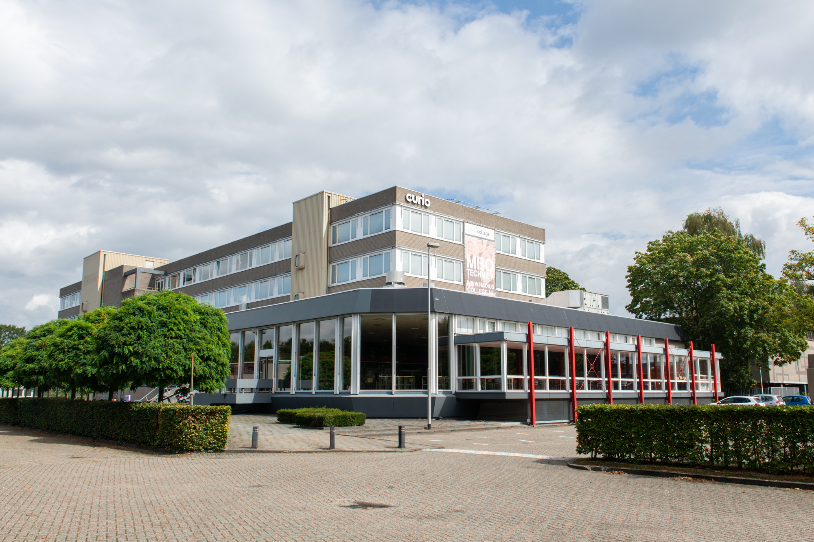

Opleiding
Tijdens de opleiding software developer leer jij alles over apps en programmeren. Ben jij straks die professional met kennis van C#, PHP en Javascript? Je ontwikkelt bijvoorbeeld webbased applicaties, websites, toepassingssoftware en media. Je houdt rekening met de wensen van de klant en je test je apps zelf. Of leer werken met een Content Management Systeem (CMS) en platformen zoals Adobe Photoshop®, Adobe XD en Figma. Je weet hoe belangrijk de opmaak van websites en applicaties is en kunt omgaan met de verschillende mediatypen. Deze zien er niet alleen goed uit, maar werken ook perfect. Met een tevreden klant als resultaat.
